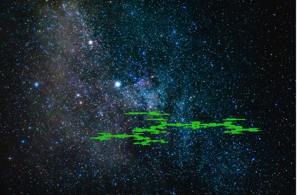

Animations
Coding

Graphics

Photography

About Me?
In my college years I've become part of three different clubs. The first is Kasamahan, USF's Filipino culture club. Kasamahan seeks to strengthen ties between the Fil-Am (Filipino-American) student body to our cultural roots through a range of year-round activities and events, our biggest being Barrio, a 2-3 hour annual production held in the spring. I served as an intern/representative for the Sophomore class of 2015-2016.
The next club is Hawaiian Ensemble, a super chill club dedicated to performing Hawaiian dances. We usually perform 2-3 dances at USF's annual Culturescape held during Cultual Week in the month of November. In the spring we host our own yearly performance Hoike. Outside of these 2 major shows, Hawaiian Ensemble has been requested to perform at other small charity events.
Lastly I am a member of USF Koret's Taekwondo club. I am currently a yellow belt, having started as a white belt while at USF. I also serve as Treasurer for the club, making sure that dues are paid and conferring with the manager of Koret about pricing.
Here's a list of why you should hire me! I have/am:
- Strong problem solving and analytical skills
- Fine
perfectionistattention to detail - Able to multitask and/or work efficiently w/o pressure
- Capable of working independently or in a team setting
- Developed written and oral communication skills
Copyright Joseph Perez 2016